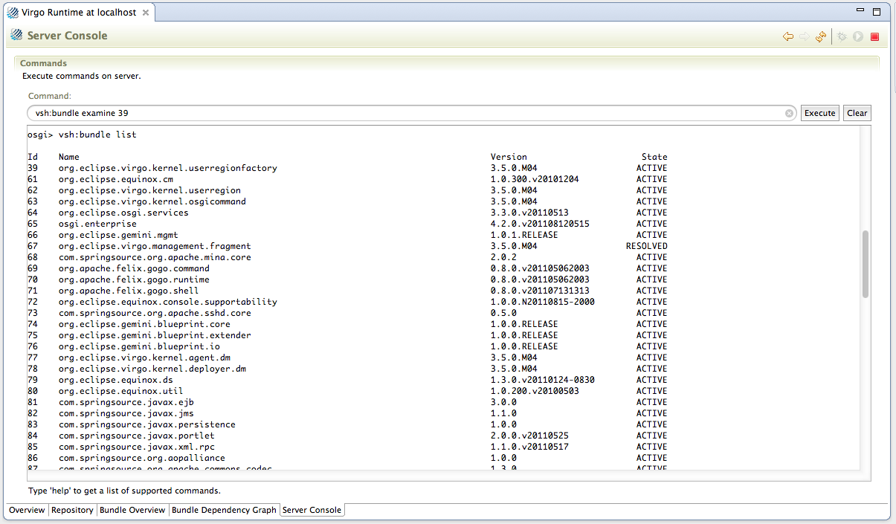

The "Server Console" tab takes you to an interactive console for exploring and managing the state of a running server. (This console is different from the "Console View", which displays the log output of running server instances.) Enter text in the "Command" text area and click the "Execute" button or press RETURN to execute the command.

For a list of available commands and how to use them, see the Virgo Shell Command Reference sub-section of the Equinox Console section in the Virgo User Guide